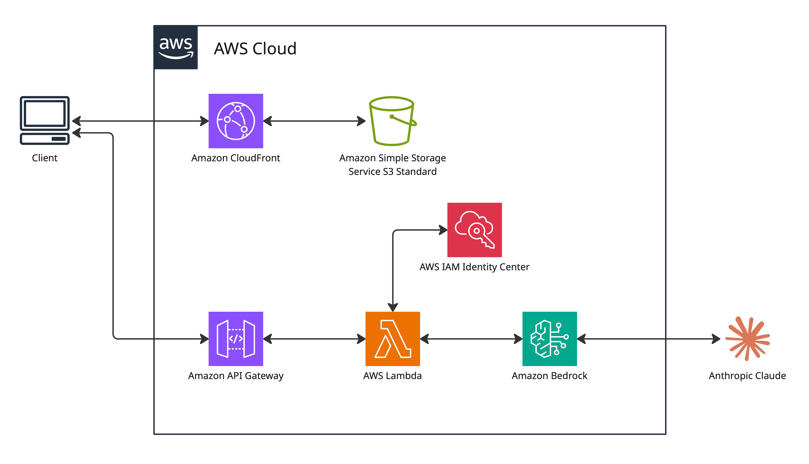

AI Integration · Serverless · Web App
"SUDOKOO" is an AI-powered web app that photographs a Sudoku puzzle and turns it into an interactive game — using Amazon Bedrock with Anthropic's Claude for computer vision capabilities.

My girlfriend had a Sudoku puzzle from a newspaper clipping that she'd kept for years. She wouldn't let me write on it because she wanted to finish it herself. I decided to digitalise it so I could have a go at solving it. This very niche problem became the starting point for this project.
Beyond solving my very unique problem, the project was an opportunity to learn how to integrate AI into a real application using AWS infrastructure — specifically Amazon Bedrock.
The system is a serverless web application that uses an API gateway and a Lambda function to send a base64-encoded image to Amazon Bedrock. Bedrock uses Claude to extract and map the sudoku puzzle from the image. The puzzle is verified as a solvable sudoku puzzle and the data is sent back to the application as a playable puzzle.
User (browser)
│ HTTPS
▼
CloudFront (CDN + HTTPS enforcement)
│ Origin Access Control
▼
S3 (private bucket — HTML, CSS, JS)
Camera scan flow:
Browser → base64 image → POST /scan-sudoku
│
▼
API Gateway
│
▼
Lambda (Node.js 18.x)
│ InvokeModelCommand — claude-3-5-sonnet
▼
Amazon Bedrock
│ Returns: extracted 9x9 grid (JSON)
▼
Lambda (validates puzzle + runs backtracking solver)
│ Returns: { puzzle, solution }
▼
Browser (renders interactive Sudoku game)
The camera scan is the main input mode. The app also includes a client-side puzzle generator — new games are generated in the browser with no API call required. The game engine (pencil marks, keyboard navigation, move validation, a timer, and conflict highlighting) runs entirely client-side and works independently of the AWS backend.
Decision · AI Service Selection
Bedrock over Rekognition or a custom model. Rekognition is designed for object detection and facial recognition — extracting a structured 9×9 grid with cell values is not its intended use case. A custom model would require training data and significant upfront investment. Bedrock with Claude accepts a natural language prompt describing the extraction task and returns the result.
Decision · No VPC
Lambda runs without VPC attachment. This workload only needs to call managed AWS services such as Bedrock and S3, so Lambda can use AWS-managed networking and public regional service endpoints without subnets, route tables, NAT Gateway, or VPC endpoints. Adding VPC configuration would increase complexity and may add cost through NAT Gateway or PrivateLink endpoints, with little security benefit for this workload unless the function needs access to private VPC resources.
Decision · CloudFront + S3 with OAC
Private S3 bucket with Origin Access Control. The bucket policy grants read access only to this specific CloudFront distribution — verified by the distribution's unique ARN. Users access files only through CloudFront, never directly from S3. This prevents bypassing the CDN and avoids unexpected S3 data transfer charges.
Decision · WAF removed
WAF deployed then removed. AWS WAF was initially configured for SQL injection, XSS, and DDoS protection. At $8/month for 3 active rules on a single-user portfolio project, the cost was disproportionate.
The AI extraction works approximately 50% of the time. It worked fine on the puzzle from my girlfriend's newspaper clipping, which was the main part. The two main failure modes are... grid alignment errors (correct digits placed in adjacent cells) and character recognition errors (digits misread — most commonly 1 read as 7). Both produce an invalid puzzle, but these are all caught by the built-in puzzle validation engine, and do not get loaded into the game.
For my portfolio use case, 50% is acceptable, I just wanted to learn how to integrate AI to solve this problem. For a production application, the approach would be different: Claude's structured JSON output mode would replace the current free-text parsing, and a validation pipeline would reject and re-request extractions below a confidence threshold.
Manual deployment through the AWS console was a deliberate choice to build deeper understanding of each service's configuration options. The tradeoff was slow iteration — uploading new frontend files and invalidating CloudFront manually every time became tedious. A CI/CD pipeline (GitHub Actions → S3 sync → CloudFront invalidation) would be the first improvement if this project continued.